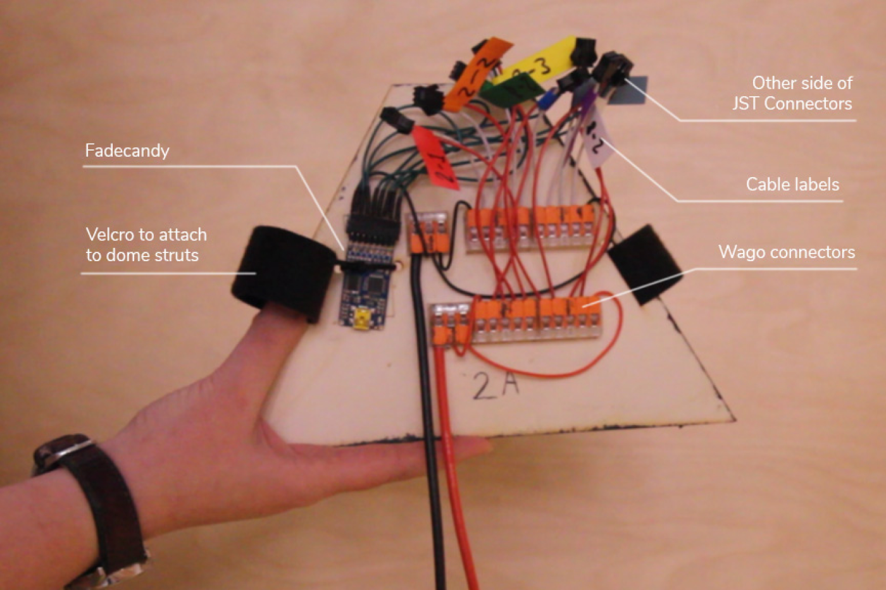
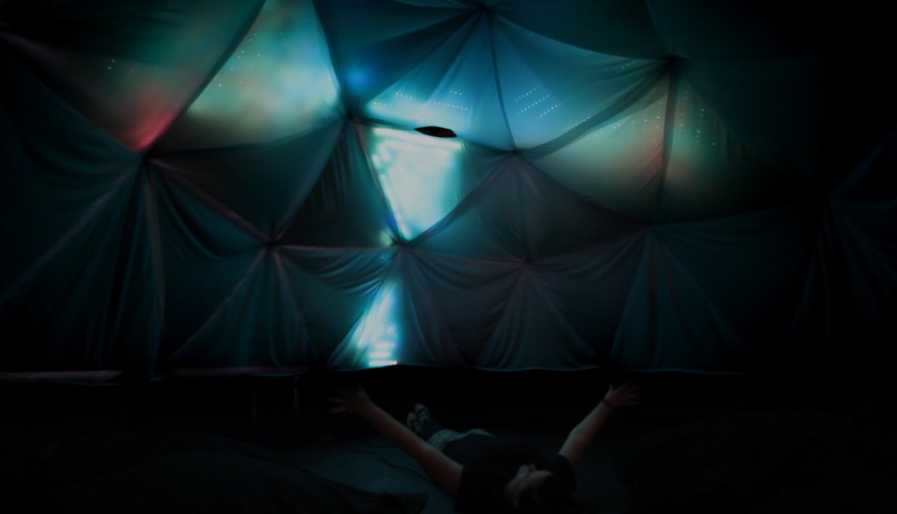

4378
LEDs
4.2m
diameter
£2700
material cost
30 days
initial build
6 hrs
installation time
When in Dome is a geodesic dome filled with lights that responds to the movement of people inside, providing a space for shared interaction.
This was largely a solo project, which I designed and built from start to finish and then took to several festivals and exhibitions.
This was largely a solo project, which I designed and built from start to finish and then took to several festivals and exhibitions.
Anyone inside the dome can turn a wave of the arm, tilt of the head or twirl of their whole body into a performance for others to watch. Movement is tracked by a Kinect camera sensor and the lights respond to movement in real time, using my own custom built software which detects and interprets movement in the space.
The software was written in Processing and the LEDs are driven using Fadecandy.
Making of
Physical dome build
I built the dome using injection moulded hubs made by BuildWithHubs and sawn timber struts which I cut to size and painted black. I built legs to raise the dome off the ground for better visibility of the lights, and added aluminium flat bar cross brackets between each leg for stability.


Painting the geodesic dome struts
Attaching connectors to the struts
Geodesic dome
Planning the lights
I used SketchUp to plan the visual layout of the lights in 3D and created several options for the strip placements. The layout had to take into account aesthetics and also distribution of power and data. I used 11 Fadecandys and 11 power supplies to cover the 33 triangles of the dome.





3D model of the geodesic dome, created in Sketchup, to plan LED layout aesthetically
Planning the LED and data cable layout on the triangle panels. Each Fadecandy can drive up to 8 strips of 64 pixels each, so the lines on the panels were divided over these strips
Flattened view of the surface of the dome, showing LED, power and Fadecandy layout. Each triangle, power supply and Fadecandy are numbered and this plan was used for each setup build.
11 of these panels distribute power and data across the dome
Spreadsheet I used to calculate how much cable was needed between each LED strip, and to track my progress through soldering them (a total of around 23 hours of soldering)
LED panels attached to the dome using velcro straps
Creating the panels
The panels were cut out of thin plywood to reduce weight. I would have loved to use acrylic so that the lights would be more visible from outside, but that was out of budget for this project. I cut 3 triangles out of each sheet of plywood using a track saw.The LED strip is attached to the board using cable ties. The panels were too large for the laser cutter I had access to, so I created templates that covered half of each panel and drilled holes for the ties manually.
The panels are hung in the dome using small carabiner clips that attach to eye hooks on the hubs.


Equilateral triangle panels
Isosceles triangle panels
Panels hanging in the dome
Diffusion
A friend helped me sew together a fabric covering to diffuse the lights. The best method for doing this ended up being to hang sections in the dome itself and pin new triangles into place, before taking it down to sew them on.


Fabric cover hanging in the dome
Creating the fabric cover
Fabric cover hanging in the dome from outside
Completed cover hanging in the dome
Here's some timelapse footage of the dome build and fabric hanging.
Mapping LEDs
I mapped the LEDs across the screen in Processing to create a 2D version. Anything I draw on the Processing canvas is repeated in realtime on the lights.Software
I worked with both a Kinect v1 and a Kinect v2 in various different versions of this project. The Kinect camera uses infrared to sense depth. The dome compares readings of depth across its field of view to find differences, that is, movement. The code creates visual effects that respond to this movement.You can see some of the code on github.
Installation
I installed When in Dome at a variety of locations including gallery and festival settings. It takes around 6 hours to build and around 1 hour to dismantle.



When in Dome at Ugly Duck
Installing When in Dome at London Decompression (nightclub event)
When in Dome at Nest Festival, UK, where it had a cover to keep the rain off participants
When in Dome at Nowhere festival, where it had individual panels of fabric to difuse the lights, to allow better airflow
Participant inside When in Dome at Nest Festival, UK